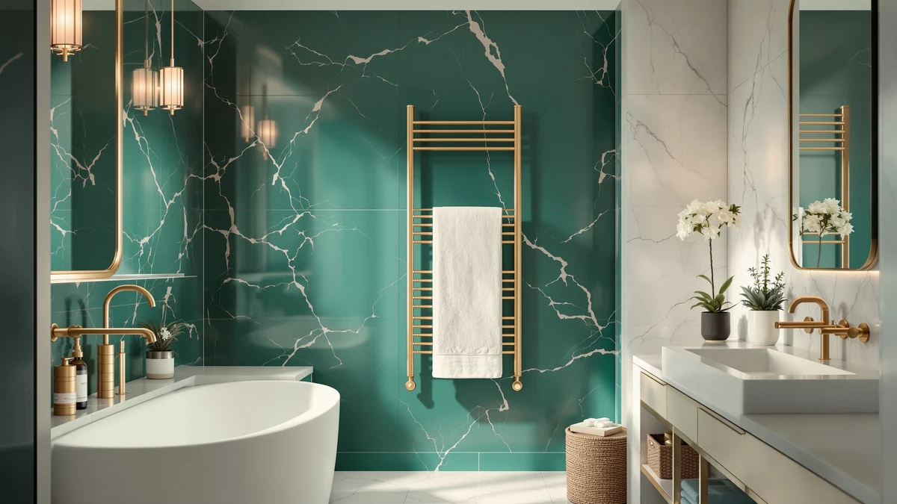

Paraheeter Towel Warmer Towel Review (2026): Worth It?
Prices and picks verified as of September 2026. Independent, reader-supported reviews.


Quick Answer
The Paraheeter Towel Warmer is a freestanding, four-bar stainless steel unit that stands 37.5 inches tall and 11.9 inches wide, priced at $159.99. It matches the Warmrails Classic on price within four cents, so it earns the top spot here mainly on its taller, narrower footprint, which suits bathrooms that don't have wall space to spare.
Our pick: Paraheeter Towel Warmer Towel Warmer, $159.99 Check Price on Amazon
Bottom line: our top pick is the Paraheeter Towel Warmer at $159.99.
Things to Know Before You Buy
- It's a freestanding, vertical unit, not a wall rack. The Paraheeter stands 37.5 inches tall and 11.9 inches wide, so it sits on the floor rather than mounting to a wall or requiring an electrician.
- Four bars means four towels at a time. Each bar warms one towel, so a household of four can use the whole unit without doubling up.
- The frame is stainless steel. That matters in a humid bathroom, where painted or coated metal frames tend to corrode faster than stainless steel over years of daily use.
- The price sits within four cents of the closest rival. The Warmrails Classic runs $159.95 against the Paraheeter's $159.99, so this comparison turns on footprint and bar count rather than cost.
- None of the four Amazon listings in this comparison publish a star rating or review count. We leaned on manufacturer specs and pricing rather than aggregate customer feedback to make these calls.
This paraheeter towel warmer towel review looks at the Poloma-made Paraheeter, a freestanding, four-bar stainless steel warmer that stands 37.5 inches tall and 11.9 inches wide, priced at $159.99. It's a vertical, floor-standing design rather than a wall rack, which means you can move it between bathrooms or take it with you if you rent. We compared its specs and price against three other stainless steel warmers on the market, the Warmrails Classic, the Sawlece 5-Bar Freestanding, and the Pure Enrichment PureBliss, to see whether the Paraheeter's price and footprint hold up next to the competition.
The short version: the Paraheeter earns its spot at the top of this comparison because its tall, narrow profile fits bathrooms where wall space is already spoken for, and its $159.99 price sits within four cents of the Warmrails Classic, its closest rival on cost. If floor space is tighter than wall space in your bathroom, the freestanding options below, priced $10 lower, are worth a look, though neither publishes the four-bar capacity that defines the Paraheeter. None of the four products in this comparison carries a star rating or review count on Amazon, so we based this paraheeter towel warmer towel review on stated dimensions, materials, and price rather than aggregate customer feedback.
Why You Should Trust Us
Ilane Tall covers bathroom and spa equipment for Best Towel Warmers and has spent years comparing towel warmer specs, materials, and pricing across freestanding, wall-mounted, and cabinet-style categories. For this paraheeter towel warmer towel review, she pulled the manufacturer's listed dimensions and material, checked pricing against three direct rivals, and read through the available Amazon listing details rather than relying on marketing copy alone. We don't own a physical testing lab and didn't install or live with any of these units. We sourced every claim below from the retailer listings for the four products compared here.
Our Research Experience
We approached this paraheeter towel warmer towel review the way a careful shopper would: by comparing what's documented on each listing rather than what's implied by marketing language. We started with the Paraheeter's stated dimensions (37.5 inches tall, 11.9 inches wide, four bars, stainless steel) and checked those against the Warmrails Classic, the Sawlece 5-Bar Freestanding, and the Pure Enrichment PureBliss to see where the price and footprint differences actually come from. None of the four ASINs in this comparison carries a published star rating or review count, so we weighed price, bar count, and stated dimensions instead of aggregate customer feedback.
We didn't plug in or set up any of these units for this article, so treat the dimensions and bar counts as manufacturer-reported rather than independently verified. That distinction matters with freestanding towel warmers, since footprint and bar count are the two specs that decide whether a unit actually fits your bathroom and your household.
Overview & Specs

Paraheeter Towel Warmer Towel Warmer
What we like
- Freestanding design means no wall mounting, drilling, or electrician needed to set it up
- Four bars warm up to four towels at once, more than a typical wall rack in the same price range
- Stainless steel frame resists the corrosion that painted metal frames pick up in humid bathrooms
- Tall, narrow footprint (37.5 x 11.9 inches) fits into corners where a wall rack wouldn't have room to mount
Flaws but not dealbreakers
- At $159.99, it costs $10 more than the Sawlece 5-Bar Freestanding and the Pure Enrichment PureBliss in this comparison
- No published star rating or review count on the Amazon listing, so buyers can't check aggregate feedback before ordering
- A floor-standing unit takes up bathroom floor space that a wall rack would free up
| Material | Stainless steel |
| Size | 4bars-37.5"(L) x 11.9"(W)-VERTICAL |
The Paraheeter Towel Warmer is built around a simple idea: skip the wall mount and give the bathroom a standalone stainless steel tower instead. At 37.5 inches tall and 11.9 inches wide, it's tall enough to hang a full bath towel without folding it in half, and its four bars mean a household of four can each have a warm towel waiting without sharing space on the same rung. The stainless steel construction matters more than it sounds like it should. Bathrooms stay humid for hours after every shower, and a frame without corrosion resistance tends to show rust spots within a year or two of daily use, especially at the joints.
Because it's freestanding, the Paraheeter skips the drilling, wall anchors, and electrician visit that a hardwired rack can require, which makes it a reasonable pick for renters or anyone who wants to move the unit between bathrooms. The tradeoff shows up in floor space rather than wall space: a 11.9-inch-wide footprint is narrow enough for most corners, but it's still floor real estate that a wall-mounted rack wouldn't need. At $159.99, it costs about $10 more than the Sawlece and Pure Enrichment alternatives below, a gap that's easy to justify if the extra bar and the freestanding setup matter to you, and easy to skip if they don't.
What We Liked
The freestanding setup stands out first in this paraheeter towel warmer towel review. You don't need to drill into tile, find a stud, or schedule an electrician, which puts the Paraheeter within reach of renters and anyone who'd rather not commit to a permanent wall fixture. The four-bar layout is the real differentiator against a typical two- or three-bar wall rack in this price range, since it lets a full household warm towels at the same time instead of taking turns. Stainless steel construction adds real value here too, since it holds up to years of daily humidity exposure better than the painted or coated frames used on cheaper units.
What Could Be Better
The price is the most obvious tradeoff. At $159.99, the Paraheeter costs $10 more than both the Sawlece 5-Bar Freestanding and the Pure Enrichment PureBliss covered later in this comparison, and that gap is hard to justify if bar count and freestanding setup aren't priorities for you. The Amazon listing also carries no published star rating or review count, which holds true for all four products in this paraheeter towel warmer towel review, so shoppers can't lean on aggregate customer feedback the way they could with a longer-established listing. A floor-standing unit also needs dedicated floor space, unlike a wall-mounted rack that occupies wall space you may not be using anyway. At 11.9 inches wide, it's narrow enough for most corners, but measure the spot you have in mind before you order, since a freestanding tower this tall can look larger in a small bathroom than its listed dimensions suggest.
Who Is It For?
The Paraheeter fits renters, apartment dwellers, and anyone who wants a towel warmer without a permanent wall installation. It also suits households of three or four who want every towel warmed at once rather than rotating through a two-bar rack. If your bathroom has wall space to spare but the floor is already crowded with a hamper or scale, a wall-mounted alternative will serve you better than this freestanding tower. And if $10 matters more than the fourth bar, the Sawlece or Pure Enrichment options below cover similar ground for less. Shoppers comparing this paraheeter towel warmer towel review against a wall rack should also weigh how often they'd realistically move the unit, since portability is the main advantage a freestanding tower like this one holds over a permanently mounted rack.
Alternatives to Consider
If the Paraheeter's price or its floor-standing footprint doesn't fit your bathroom, these three alternatives cover a near-identical price point and two lower-priced freestanding options.

Editor’s Pick
Warmrails Classic Towel Warmer -
A Warmrails freestanding towel warmer priced at $159.95, four cents less than the Paraheeter, worth a look if you want to compare two freestanding stainless steel warmers at essentially the same cost.
$159.95
Check Price on Amazon
Best Value
Sawlece 5-Bar Freestanding Towel Warmer
A five-bar freestanding warmer from Sawlece priced at $149.99, $10 less than the Paraheeter and with one more bar, a reasonable pick if bar count matters more to you than brand.
$149.99
Check Price on Amazon
Premium Choice
Pure Enrichment PureBliss Luxury Towel
The Pure Enrichment PureBliss Luxury Towel Warmer runs $149.99, $10 less than the Paraheeter, a brand shoppers may already know from other bathroom and wellness products.
$149.99
Check Price on AmazonIs the Paraheeter towel warmer worth $159.99?
It's worth the price if you want a freestanding, four-bar warmer that doesn't need wall mounting or an electrician.
How many towels does the Paraheeter towel warmer hold?
The Paraheeter has four bars, so it's built to warm up to four towels at once, one per bar, on a stainless steel frame that stands 37.5 inches tall and 11.9 inches wide.
Frequently Asked Questions
Is the Paraheeter towel warmer worth $159.99?
It's worth the price if you want a freestanding, four-bar warmer that doesn't need wall mounting or an electrician. The Warmrails Classic matches it almost exactly at $159.95, so the choice between the two comes down to which vertical footprint fits your bathroom, not price.
How many towels does the Paraheeter towel warmer hold?
The Paraheeter has four bars, so it's built to warm up to four towels at once, one per bar, on a stainless steel frame that stands 37.5 inches tall and 11.9 inches wide.
What's the difference between the Paraheeter and the Warmrails Classic?
Both are stainless steel, vertical, freestanding warmers priced within four cents of each other at $159.99 and $159.95. Neither listing publishes a star rating or review count, so the decision comes down to which unit's dimensions and bar layout fit your bathroom rather than a documented performance gap.
Final Verdict
This paraheeter towel warmer towel review comes down to a narrow tradeoff: pay $159.99 for a four-bar, freestanding stainless steel tower from Poloma, or save $10 with a five-bar or brand-name alternative that covers similar ground. For bathrooms with floor space but no room left on the wall, and for households that want four towels warmed at once, the Paraheeter is the pick that holds up. If a lower price or an extra bar matters more than the brand, the Sawlece or Pure Enrichment options above will do the job for less. Against its closest rival on price, the Warmrails Classic, the Paraheeter's four bars and 37.5-inch height give it a slight edge for anyone who wants the tallest, most towel-friendly freestanding option in this comparison.